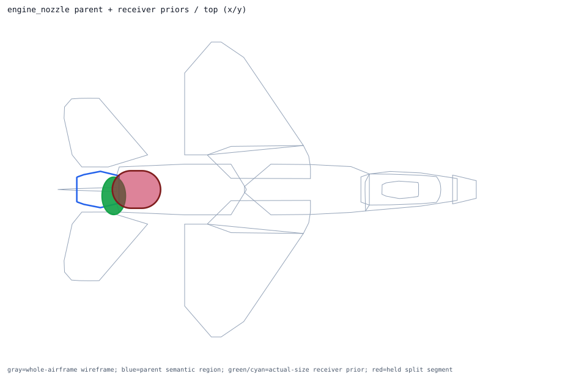
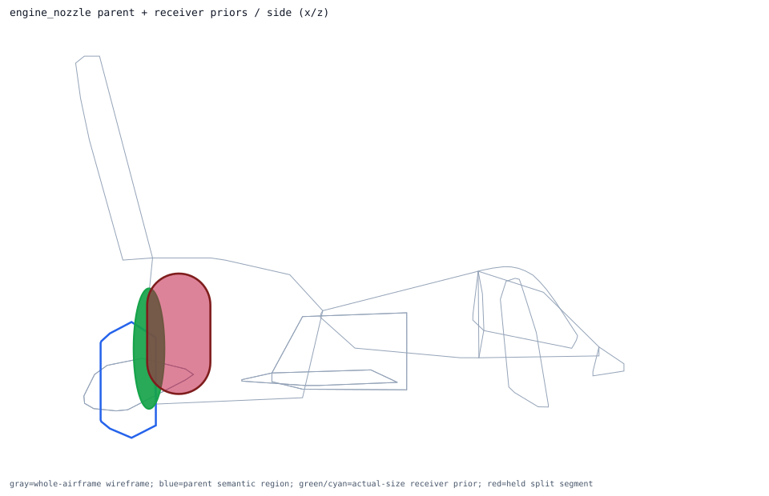
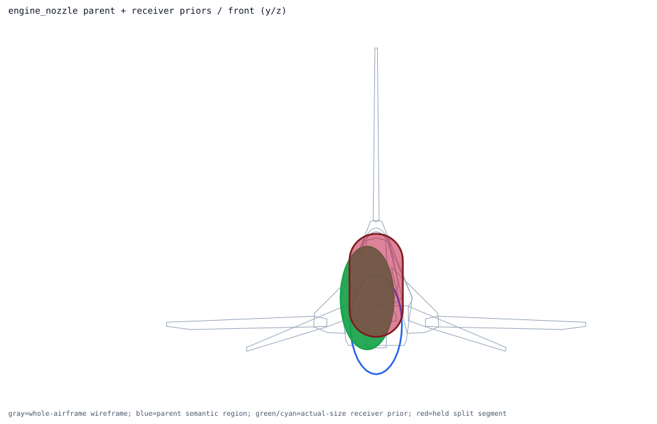

Back to parent-child layout index
semantic_engine_nozzle_volume
obb parent -> engine_nozzle; receiver overlays 1; extra slots 0
Trace Details
- parent semantic component: semantic_engine_nozzle_volume
- parent surface component: surface_engine_nozzle
- outer model region: engine_nozzle
- volume role: engine_nozzle_volume
- geometry primitive: obb
- primary receiver: afterburner_nozzle
- extra receivers: none
- cross-region held receivers: none
- external held split segments: engine_core_afterburner_segment
- parent handoff: direct_receivers_parse_ready_cross_region_receivers_held
- layout policy: one_parent_semantic_shell_view_with_receiver_priors_overlaid
- runtime projection: review_only_visual_layout_not_runtime_activation
- child overlays:
- single_receiver_overlay: afterburner_nozzle ellipsoid dims=[0.75, 1.1811, 1.1811]m evidence=public_engine_diameter_mesh_length_estimate segments=0 -> already_inside_whole_airframe
- external held segment overlays:
- engine_core:engine_core_afterburner_segment capsule owners=['aft_fuselage_engine', 'engine_nozzle'] dims=[1.540087, 1.1811, 1.1811]m


